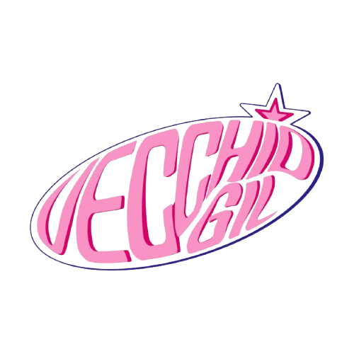
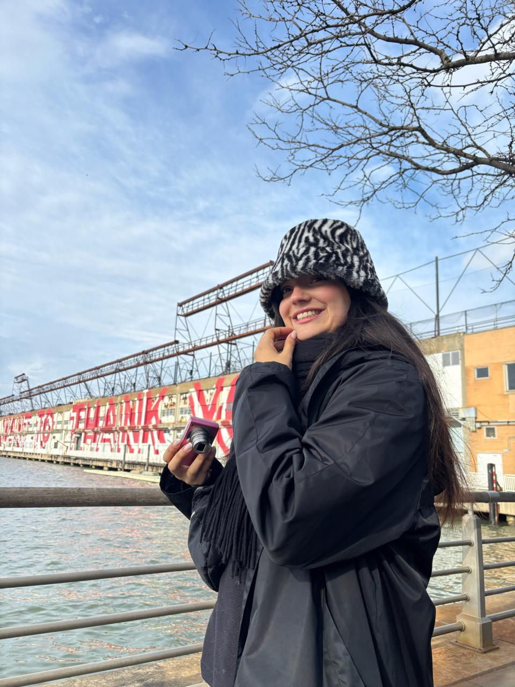

Vecchio Gil nació a partir de mi fascinación por la estética Y2K, una tendencia inspirada en la moda, la música, el diseño y la cultura de finales de los años noventa y principios de los 2000. Esta época estuvo marcada por grandes cambios tecnológicos, como la popularización de internet, los teléfonos celulares, las cámaras digitales y el comienzo de una nueva era digital.
La moda de los años 2000 se caracterizó por ser atrevida, divertida y experimental. Predominaban los colores vibrantes, los tonos metalizados, el rosa en todas sus variantes, los brillos, el animal print, el denim y los accesorios llamativos. Las carteras se convirtieron en piezas protagonistas de los looks, combinando estilo y personalidad.
Lo que más me atrae de esta estética es la libertad creativa que transmite. Los años 2000 representaron una etapa en la que la moda era una forma de expresión sin límites, donde se mezclaban colores, texturas y tendencias para crear estilos únicos. Además, es una época que forma parte de mi infancia y que siempre despertó mi interés por el diseño y la moda.
Durante la pandemia comencé a explorar el diseño y la confección de carteras como un desafío personal y una manera de desarrollar mi creatividad. Fue entonces cuando decidí transformar toda esa inspiración en un proyecto propio. Así nació Vecchio Gil.
Cada colección busca recuperar la esencia de los años 2000 a través de colores, materiales y diseños inspirados en la estética Y2K, reinterpretándolos de una manera actual. Mi objetivo es crear accesorios que permitan expresar identidad, personalidad y confianza, manteniendo vivo el espíritu creativo de una época que continúa inspirando a nuevas generaciones.